SysCheck - Lumo PMT Calibration Procedure
Purpose
To calibrate the Panther Luminometer operation and verify that it is in compliance with performance validity and acceptance criteria.
Scope
The SysCheck Reagent is used for performing a verification test of the Luminometer calibration factor.
The use of the SysCheck Reagent effectively assesses the Luminometer.
A Syscheck is NOT required on Installs.
A Syscheck will need to be performed when replacing a Lumo or on a 3Yr-PM.
A Syscheck may also be performed when troubleshooting a Lumo .
The Lumo Cal factor MUST be checked during Instrument Installs:
Check Lumo Cal Factor- To be within specifications, the Calibration Factor MUST read between 0.12–0.24
- If Lumo Cal Factor is NOT within specification, (e.g. Cal Factor is set to 1), then run SysCheck.
Time Required
Parts and Materials Required
| Description |
Quantity |
| SysCheck Reagent Barcodes
|
1 |
| SysCheck Kit, Reagent tubes |
4 |
| Reagent Rack, 250 Test Kit |
1 |
| Sample Rack |
1 |
| Tape and scissors |
|
| Empty Amplification Reagent bottle |
1 |
| Empty Enzyme Reagent bottle |
1 |
| Empty Probe Reagent bottle |
1 |
| Empty Select Reagent bottle |
1 |
| Empty Target Capture Reagent bottle |
1 |
Note—
The SysCheck Reagent is stable when stored unopened at 15°C-30°C until the expiration date. Do not use after the expiration date.
SysCheck Reagent is light sensitive and should be stored in a dark place.
Before pipetting, swirl the SysCheck Reagent bottle and gently invert three times.
Do not vortex. For best performance, use between 15 °C to 30 °C. |
APTIMA Assay Fluids
| Reagents |
Material Number |
| Auto Detect 1 |
LR0167G-01 or equivalent |
| Auto Detect 2 |
LR0148G-01 or equivalent |
| Oil |
LR0354 or equivalent |
| Wash Solution |
LR0356 or equivalent |
| Buffer for Deactivation Solution |
LR0355 or equivalent |
- Shutdown and restart the PC and Instrument.
Panther Remote Dashboard may have to be re-enabled before restarting the GUI.
 Open, and place the four SysCheck Reagent Tubes into Sample Rack positions 1, 2, 3, and 4 with the tube barcode facing inward.
Open, and place the four SysCheck Reagent Tubes into Sample Rack positions 1, 2, 3, and 4 with the tube barcode facing inward.
The barcodes on the tubes will NOT be used.
Ensure the values listed on each Syscheck sample tube are all the same.
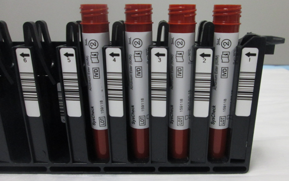
- Tape a corresponding barcode on one side of each of the five empty reagent bottles.
 | Note—Although no assay reagents will be used for Panther Luminometer SysCheck Reagent Verification procedure, the bottles must be present. |
- Place the empty, labeled bottles with the barcode visible into the Reagent Rack in the following sequence:
- Amplification Reagent position
- Enzyme Reagent position
- Probe Reagent position
- Select Reagent position
| Note—All the lot numbers have to match as well as the bottle number. |
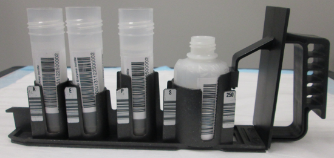
- Power on the Panther System and PC.
- Start Panther Main.
- Ensure the System is in IVD Mode.
- Ensure Real Time Only Mode is disabled.
- Disable LIS Communication.
- Display the customer configuration settings by selecting the Admin tab, then System Configuration, then the drop-down menu for Specimen Loading.
- Change the customer's configuration settings to run Syscheck:
-
CHECK Enable Non-Barcode Sampling Loading
-
UNCHECK Enable Auto Sample ID Assignment for Unreadable Barcodes
-
UNCHECK Enable Detection and Flagging of Repeat Barcodes
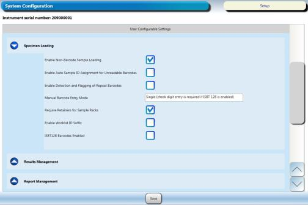
- Record the customer's settings (checked or unchecked) for the following options:
- Enable Non-Barcode Sampling Loading
- Enable Auto Sample ID Assignment for Unreadable Barcodes
- Enable Detection and Flagging of Repeat Barcodes
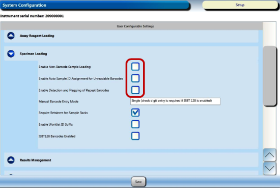
- Click Save.
- Navigate to the Tasks screen and perform the following Tasks according to the Panther System Operator's Manual.
- Load Tips
- Load MTUs
- Load Universal Fluids
- Empty Waste
- Click the Instrument button. Wait for the Prime to complete successfully.
- Click the Load Reagents button.
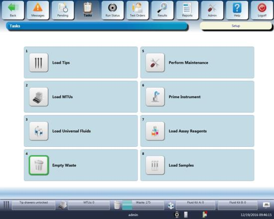
- Open the Reagent Bay door, and when the lane indicator turns purple, load the Reagent Rack into the first lane of the Reagent Bay. Ensure the barcodes are visible.
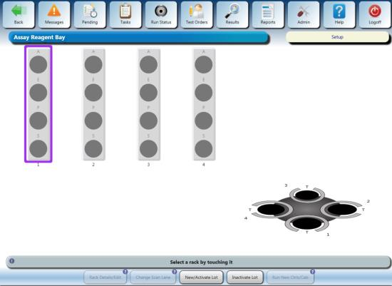
- Close the Reagent Bay door, verify the bottle indicators turn green and the lane is labeled “Syscheck."
- Open the TCR door and place the empty, labeled TCR bottle in the TCR Carousel Slot 1 (use a TCR Carousel adapter if necessary) with the barcode visible. The Reagent Bay lane and the TCR slot have to match.
- Shut the TCR door, then wait for the Carousel to scan and the TCR indicator to turn green.
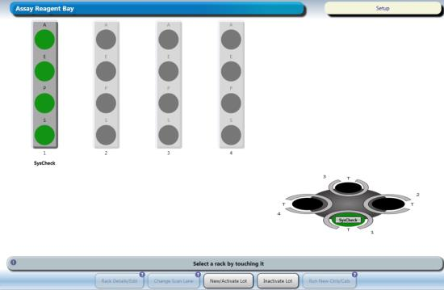
- The reconstitution screen is displayed when the scan is successful.
- Click on the Calendar icon to enter the current date and click OK.
- Now hit Accept. This will take put you back on the Assay Reagent Screen.
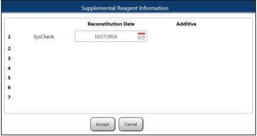
- From the Tasks screen, click Load Samples. The Sample Rack Bay screen appears.
- Click Set on the top right side of the screen.
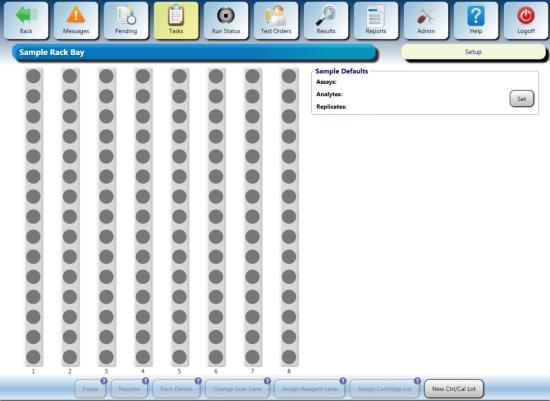
- Select the Replicates box.
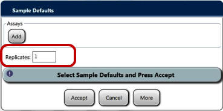
- Enter 3 in the Replicates field and click OK. This creates 12 test orders with 4 sample tubes for the Syscheck sequence.
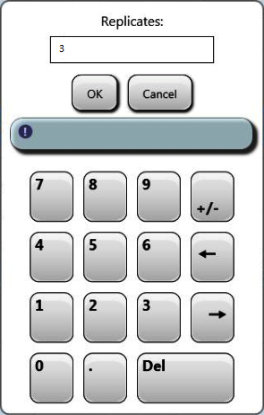
- Click Add.

- Select SysCheck from the assay list and click OK.
_500x316.png)
- Click Accept.

- Ensure the caps have been removed from the four Syscheck sample tubes and the sample rack lid is installed on the rack.
| Note—If any bubbles are present inside the sample tubes, pop the bubbles before continuing. |
- Open the Sample Bay door and wait for the lane indicator to turn purple.
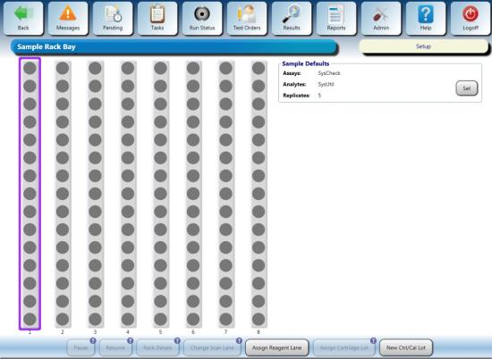
- Load the Sample Rack into the first lane and close the door.
| Note—When loading the sample tubes, be sure the barcodes are not facing out. The system cannot read the barcodes. New barcodes will automatically be assigned to the tubes. |
- Verify the Sample Rack indicators turn green.
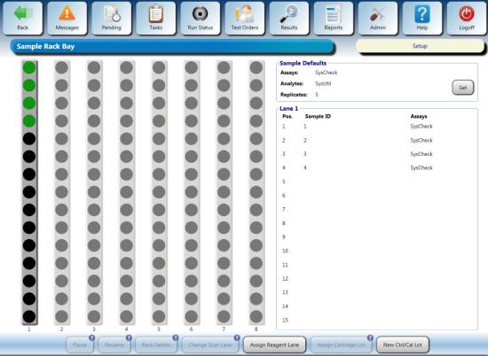
- Verify that 12 test orders were created for this sequence by navigating to the TEST ORDERS tab. In the bottom left corner you will find total test orders.
| Note—You may have to select “By Date” to see the Test Orders instead of having “Not processed today” selected. |
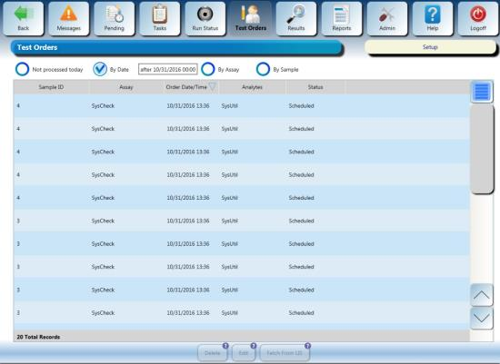
- The SysCheck Reagent sequence should begin automatically.
| Note—If the reagent sequence does not begin after a few minutes, verify all the items in the Task screen have been highlighted green. |
- The Syscheck procedure takes approximately 20 minutes to complete.
- Enable LIS Communication. Click Save.
- Set Sample Handling Configuration to the customer's configuration recorded in Step 4. Click Save.
- Proceed to General Data Analysis and Result Interpretation.
- Launch the Panther Remote Dashboard software.
- Navigate to the Tasks screen.
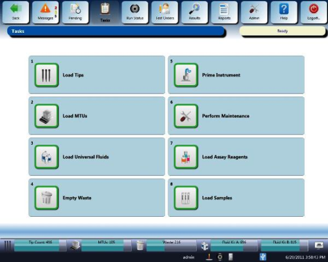
- Click the Perform Maintenance button.
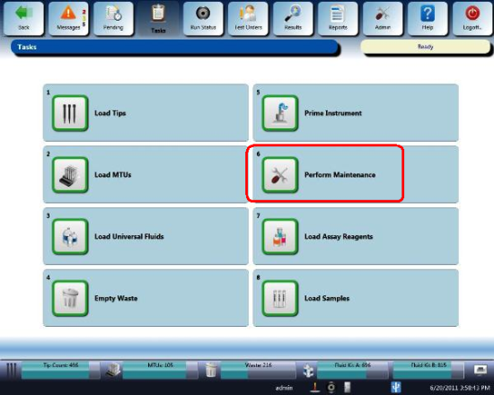
- Click the Service button.
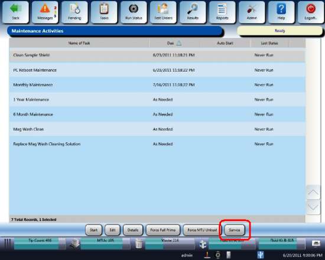
- Click the Dashboard button.
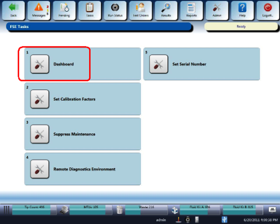
- Click the SysCheck tab.
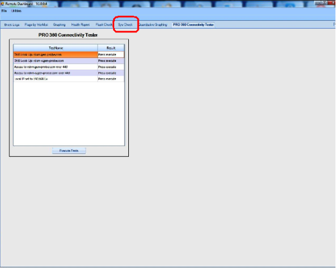
- Enter the Operator's name.
- Enter the Set RLU value from the SysCheck Reagent tube.
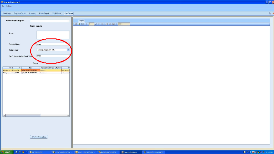
- Select the data set to be analyzed.
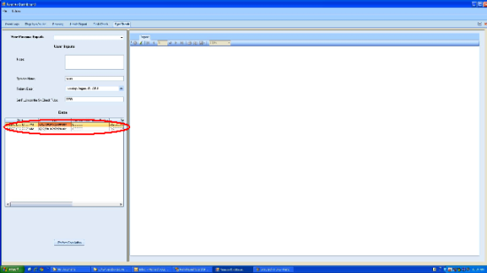
- Click Perform Calculation.
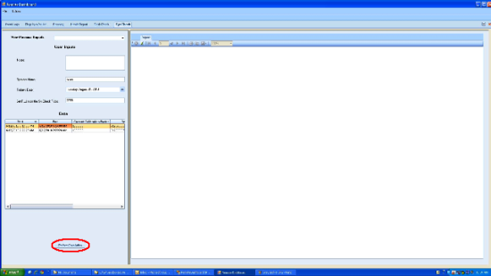
- A dialog box appears when the SysCheck Reagent run is completed.
When the pop up appears requesting to update the Cal Factor appears, click cancel.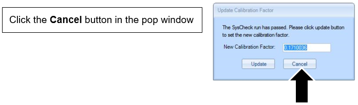
- Review the generated report.
| Note—Ensure ALL acceptance criteria are met in the report. (All 4 criteria points are "True"). |
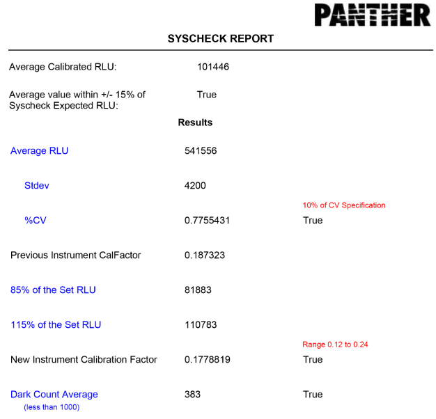
- If all four criteria are met, then click Perform Calculation again and click the Update button that follows to update the Cal Factor. The SysCheck procedure is considered PASS if the calibration factor is between 0.12–0.24.
- If any of the criteria are not met, troubleshoot, resolve and repeat the Syscheck procedure.
- Save Syscheck record to .pdf and attach to applicable service record.
- Complete the Syscheck procedure.
| Note—A pop-up will NOT appear requesting to update the Cal Factor. |
- Review the generated report.
| Note—Ensure the %CV, New Instrument Calibration Factor and Dark Count Value acceptance criteria are met and report True.
The Result for Previous Calibration can be False. |

- If the %CV, New Instrument Calibration Factor and Dark Count Value acceptance criteria are not met, troubleshoot, resolve, and repeat the Syscheck procedure until all three criteria are met.
- Update the Cal Factor in the Panther GUI. (Panther GUI> Tasks>Perform Maintenance>Service>Set Cal Factor)
- Ensure the Syscheck report is attached to the Service Record and note that the Remote Dashboard Syscheck Cal Factor Update has been completed in the SR Notes.
 button at the top of the page to send feedback, comments, or change requests.
button at the top of the page to send feedback, comments, or change requests.